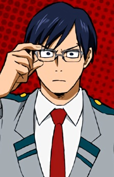

Selecione um personagem
- 
-

Midoriya
Midoriya Izuku, também conhecido como Deku, é o protagonista de My Hero Academia, um estudante determinado a se tornar um herói mesmo sem ter poderes no início da história.
Midoriya Izuku, também conhecido como Deku, é o protagonista de My Hero Academia, um estudante determinado a se tornar um herói mesmo sem ter poderes no início da história.